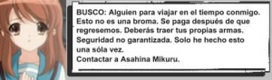

Viajes en el tiempo
 De: La Frikipedia, la enciclopedia extremadamente seria.
De: La Frikipedia, la enciclopedia extremadamente seria.
Dios jugando en un casino con
Einstein. La presencia de muchos
Einstein simultaneamente es producto de una
anomalía en el tiempo, mejor conocida como
pedo temporal Un viaje a través del tiempo es la posibilidad de volverse al pasado o ir al futuro. Muy obvio ¿no?.
Historia

Primera máquina del tiempo
Los viajes en el tiempo surgieron en el año 25 A.C. o 26 A.C. o 1960 D.C. o 69 A.C. o 4400 D.C., no es seguro pues se cree que su descubridor entusiasmado con su invento se dedico a viajar a distintas épocas y volver a inventarlos. Así como tampoco se tiene por seguro el nombre de su invento o de qué época era realmente. La cagada fue que cuando llegó al año 4400 D.C. se quedó sin nafta y no pudo viajar más (era medio boludo y no se le ocurrió buscar una estación de servicio).
Los únicos datos que se tiene por seguro del origen de esto es que la máquina tenía forma de automovil y funcionaba con Coca-Cola y que el viejo que la inventó dejo una copia de los planos en el año 1960 D.C. (aún no se ha podido determinar si fue intencional o si se los olvidó por error). Estos planos fueron encontrados por Chuck Norris quien desarrolló su forma alternativa de utilizar la máquina (sin usar máquina, sino las mismas partes biomecánicas de su propio cuerpo.)
Evolución y proliferación
Como el viejo había dejado pedazos de su máquina (si es que no eran modelos casi terminados) en casi todas las épocas las maquinas empezaron a abundar como las moscas, la porno en internet o los políticos corruptos, y así también surgieron variedades en distintas épocas y/o lugares del mundo:
Para mayor información sobre los distintos tipos o modelos de máquinas del tiempo vea esto
Ventajas y desventajas de los viajes en el tiempo
Ventajas de volver al pasado
- Podés volver a cuando eras tan sólo un capullo y recordar tus tiempo de jardín de infantes.
- Podés volver a cuando estabas de novio con esa tía tetona y decirle a tu yo del pasado que no meta la pata (que meta otra cosa)
- Podés dejar anotado en un papel las respuestas de un examen que en la actualidad ya rendiste
para el culo, entonces a tu yo del pasado le irá bien. (lamentablemente este método no funciona para el Examen del Fin del Mundo, aparentemente cada vez que se el examen toca un pupitre las preguntas cambiarán de manera que sea imposible tenerlas de antemano).
- Volverte muy atrás y conocer a Jesús.
Desventajas de Volver al pasado
- Ver lo mamón que eras cuando eras chico.
- Ver por que te peleaste con tu novia (¡sí! ¡fue culpa tuya tarado!)
- Ver todos los examenes que reprobaste.
- Llegar justo cuando lo crucifican a Jesús (y ya no lo podes salvar).
- Creación de fallos temporales, bujeros temporales o pedos temporales (estos últimos son los más peligrosos)
Ventajas de ir al futuro
- Traerte recuerditos super tecnológicos a casa cuando volvés.
- Ver cómo vas a ser, dónde vas a vivir y con quien te vas a casar.
- Ver la profesión que elegiste.
- Conocer a Mikuru Asahina (eso lo queremos todos, no lo negués)
Desventajas de ir al futuro
- Que te pesquen choreandote los 'recuerditos' y te metan en cana (peor si en el futuro hay pena de muerte).
- Ver que estás viejo, vivís abajo de un puente y conocer a tu suegra.
- Ver que sos un desempleado o peor... un programador!!!
- Ver que al año que llegaste ya estás muerto.
- Descubrir (al regreso) que te cagaste todas las sorpresas que ibas a tener en tu vida.
- Creación de fallos temporales, bujeros temporales o pedos temporales (estos últimos son los más peligrosos)
Alteración en el Orden Espacio y Temporal:
Esto se produce al alterar el pasado con cosas del futuro, como por ejemplo volver al pasado y regalarle una Charles Ingalls, lo de los examenes o lo de la novia anteriormente nombrado, o comentar o hacer cosas desconocidas en el pasado para asombrar a todos.
Alteraciones menores
- Rulitos o Bucles temporales: Se producen cuando alguien del presente se entera de algo que me ha dicho esa misma persona en su versión futura (ya se, no se entiende una mierda pero es así)
- El ya me olvidé: Es cuando accidentalmente en el pasado dejamos ver que somos del futuro pero los boludos que están a nuestro alrededor no se dan cuenta (ufff! que salvada!).
Alteraciones mayores
- Fallos temporales: Cuando algo en el pasado falla o funciona mal y caga todo el futuro (ejemplo: por tu culpa el primer automóvil no arranca y entonces ahora todos andamos a pata(caminando).
- Bujeros temporales: Es cuando por nuestras acciones o las de alguien, en el pasado, se produce un bujero negro que cambia todo lo que exise creando un mundo alternativo al nuestro.
- Pedos temporales: Son los más peligrosos de todos: Es cuando una persona viaja a distintas épocas del pasado y del futuro para autovisitarse y hacer una
orgía-masturbación colectiva fiesta con él mismo.
Como todo el mundo (o por lo menos todos los que viajan en el tiempo) viajaba al pasado precisamente para hacer esto, un grupo de personas se organizaron creando una organización que intenta corregir estos errores. Pero para prevenir que sucediera lo mismo con el Escuadrón del tiempo aplicaron el Lavado y planchado de cerebro, que evidentemente funciona ya que no podemos decir nada del futuro que sea demasiado informativo, datos como: INFORMACIÓN CLASIFICADA, INFORMACIÓN CLASIFICADA, INFORMACIÓN CLASIFICADA o que te vas a morir el día INFORMACIÓN CLASIFICADA.
 Otra consecuencia de la creación de los viajes en el tiempo es esta
Vease también
Autor(es):
- Doctor grijander
- Lance Bean
- DonPolilla
- Azulejos
- Latiosu
- Diegocon13
- Cibercrank
- Catacras
- Law ripley
- Perusse
Frikipedia 2005-2016, Licencia
GFDL 1.2 - Extraído por FrikiLeaks